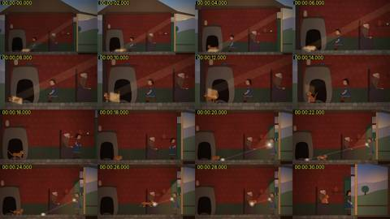
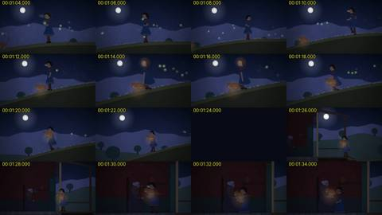
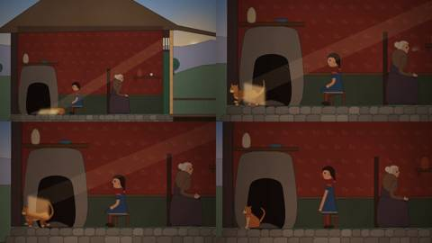
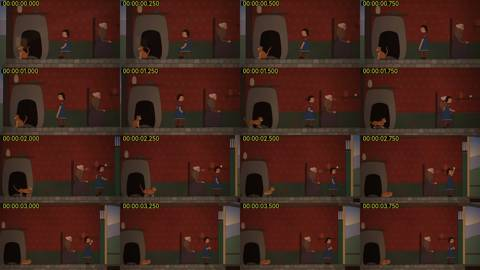
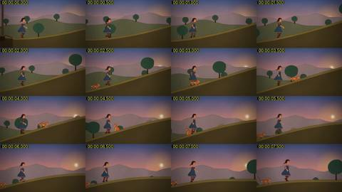
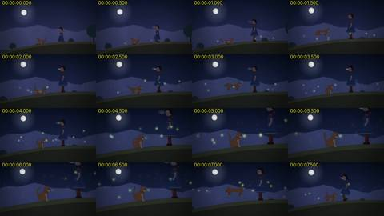
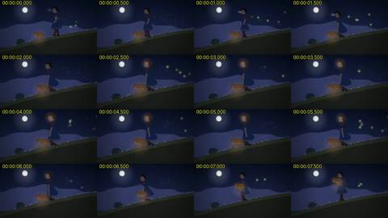
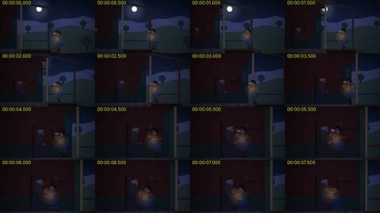

Critic · 2026-10-28 21:43 UTC · looked at 17 images
Critic watches Small Sun
PASS 1FAIL 2
The prompt it was given
You are an independent film critic for a short wordless animated film (1:57, 24 fps) at /home/claude/afterlight/film3/small-sun-3.mp4. Watch it before reading anything else in that folder. Don't read film.js, score.py, or any notes until you've written your first impressions.
How to watch: use ffmpeg to pull frames (for example ffmpeg -ss T -i FILE -frames:v 1 -vf scale=960:-1 out.jpg), and view them with the Read tool. Sample at least every 2 seconds across the whole film. Sample more densely (every 0.25 to 0.5 s) at moments that look like action, so you can judge motion. For example, build contact sheets of consecutive frames with ffmpeg's tile filter. You can't hear audio, but you can check that the audio track exists and inspect its loudness envelope with ffmpeg (astats or ebur128) to see whether sound events line up with on-screen action.
Context: the director rejected the previous cut because "the humanoids look bad and are unnatural compared with handmade cut-paper / Cartoon Saloon-style animation" and "we don't do a lot of what's fun". An earlier cut was also called "a stilted PowerPoint". This cut is meant to fix all three.
Report, in this order:
- In 4–6 sentences, the story as you understood it purely from the images: who, what happens, what the ending means. Don't guess beyond what you saw.
-
A verdict, PASS or FAIL, on three axes:
- (a) the figures (girl, grandmother, cat) read as natural, appealing handmade-style characters;
- (b) the film is fun: it has playful, comic beats that land;
- (c) it moves like animation, not slides: continuous action, staging, and camera.
- The 5–8 most important concrete problems. For each, give timestamps, what is wrong on screen, and a specific repair: pose, timing, staging, scale, camera, legibility or lighting. Prioritise problems that break story comprehension or look broken, such as a pop, an overlap, an off-model drawing, a limb going wrong, an unreadable beat, or a beat that is too dark or too small.
- What works and must be kept.
Keep the whole report under 700 words.
















What it reported
SMALL SUN cut 3: critic's report. I watched the film before opening anything else in the folder. The video and audio tracks are both 117 s. I sampled it every 2 s and pulled 0.25–0.5 s sheets on every action passage. Contact sheets are in /tmp/claude-0/-home-claude/21362850-8176-5f25-9feb-97722a7915b9/scratchpad/c3/
1. Story from the images alone A girl, her grandmother and an orange cat sit in a cut-away cottage at sunset. The cat dozes in a patch of sunlight and follows the patch as it slides across the floor. The girl catches the light in a hand mirror and plays it like a laser pointer. The cat chases the spot and pounces into grandma's lap. The girl and cat then climb a hill after the setting sun, and she flashes the mirror on the cat as the light goes. At night it turns cold (breath puffs), the cat chases fireflies, then curls up and glows. The girl carries the glowing cat home and gives it to grandma, where it lights and warms the room. The ending reads as: the cat stored the day's sun and brings it home for the night.
2. Verdicts
- (a) Figures: FAIL, but close. The cat is appealing. The girl is a stiff peg doll: a fixed profile head, stick arms with mitten hands, and a bell-shaped dress that never flexes. Grandma is a static blob who never changes pose.
- (b) Fun: FAIL, narrowly. The mirror chase (22–28 s) is a real gag, and its loudest audio peak (−8 LUFS at 28 s) lands on the pounce. But nobody reacts to it, and the second half has no comic beat beyond a mild firefly bit.
- (c) Moves like animation: PASS. Walk and run cycles are continuous, the camera tracks and reframes, and there is no slideshow feel.
3. Problems and repairs
- 10–14 s, broken sun patch. The light on the cat renders as a hard translucent rectangle floating over its body and the oven. It reads as a glitch. Repair: render it as a soft-edged floor patch that is clipped to the floor and the cat's silhouette.
- 79–104 s, cat on a plate. The glow under the cat is an opaque beige disc, so the cat looks served on a platter or sitting on a mushroom cap. This undercuts the ending image. Repair: replace the disc with an additive radial glow and no solid fill, and show the girl's arms wrapped under the cat.
- 88–110 s, ending too dark and too small. The handoff happens under a heavy dark grade. Grandma is nearly invisible from 86 to 90 s. The girl's head and the cat's tail tangle at 96 s, with the tail crossing her neck and face. Repair: lift the exposure about 1 stop and let the cat's glow actually light both faces and the wall. Push in to a medium two-shot, give grandma a clear reaching pose, and layer the tail behind the girl.
- 27–31 s, the gag has no payoff. After the pounce the cat sits upright on grandma's lap like a person, with its front paws as arms, and grandma does not move. Repair: give grandma a startle, a take and then a settle (about 12 frames), let the cat land and knead into a loaf, and give the girl a guilty mirror-hide.
- 60.5–63 s, bad push-in. The zoom crops the girl's head out of the top of frame. The cat's white front paws render as grey cylinders, and at about 63 s the cat stretches into a dachshund-length body. Repair: tilt up with the push or zoom less, and keep the cat's body length fixed during the pounce.
- 74–78 s, unclear glow. The girl's head gets a soft orange halo while the cat glows at her feet. It is hard to tell whether she is warming herself or whether this is a bug, and the "cat becomes the sun" moment is staged small and far away. Repair: cut to a close shot of the cat curling as its fur brightens, then show the girl kneel and hold her hands out to it for warmth. Drop the head halo.
- 22–28 s, beam through grandma. The mirror beam passes straight through grandma's body to the floor. Repair: lead the beam in front of her knees, or let it hit her and make that the gag.
- Girl's acting throughout. She never turns, kneels or uses her arms expressively until the carry. Repair: add 3–4 key poses (crouch to the cat at 46 s, hug herself in the cold at 66 s, kneel at 75 s) and a 3/4 head turn on each.
4. What works and must stay
- The cut-away cottage set: red patterned wall, beehive oven, stone floor, paper texture.
- The sunset-to-moonlight colour progression on the hill (32–70 s). The photographed moon sits well.
- The sun patch sliding across the floor with the cat shuffling after it. This is the right premise, once the rectangle bug is fixed.
- The mirror chase and its audio sync.
- The cat's run, pounce and firefly-hunt cycles.
- The breath puffs as the cue for cold.
- The bookend structure: the cat starts and ends in grandma's lap. The final pull-back to the house exterior at 108 s is a good last image.